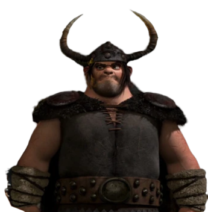

Ancien chasseur de dragons reconverti
| Rôle | Garde, Ancien chasseur de dragons |
| Affiliation | Tribu de Beurk |
| Particularité | Fils de Mastok (tradition patronymique viking) |
Mastok, fils de Mastok, est un Viking de Beurk qui a grandi avec la tradition de chasser les dragons. Après la transformation de Beurk, il s'est progressivement adapté à la cohabitation avec les dragons. Garde loyal de la tribu, il apporte une perspective différente sur l'évolution des mentalités à Beurk.